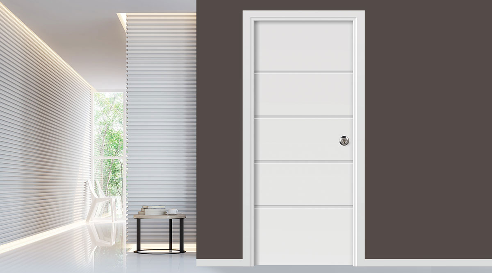
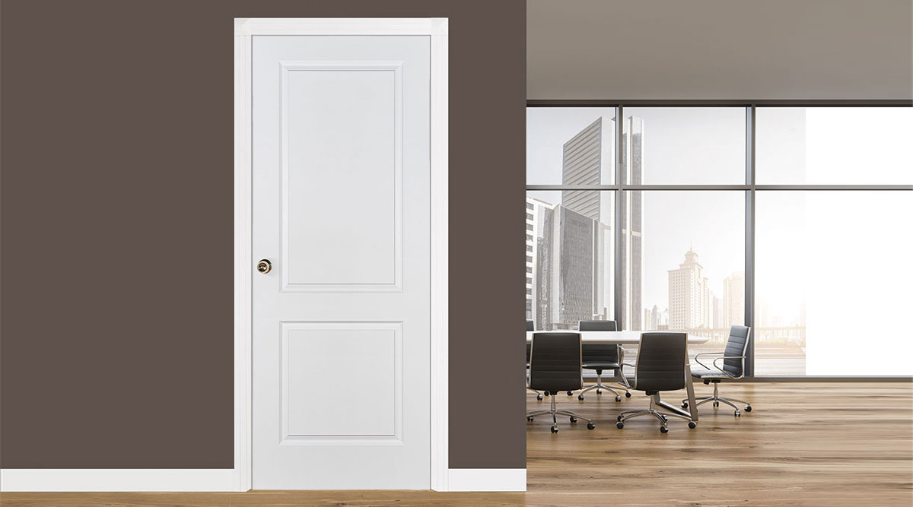

Molded doors
Smooth, contoured panel designs
Attractive and practical molded panel doors for apartments, homes, restaurants, hotels, and everyday residential work.
Interior doors for the U.S. trade
Doceian Doors supplies molded and shaker interior doors with clean profiles, dependable construction, and responsive support from Jersey City, New Jersey.
Doceian Doors
We focus on the products U.S. trade buyers ask for most: molded panel doors and shaker doors. The line is easy to understand, easy to present, and supported with model and technical catalogs for quoting, planning, and specification.
Door lines

Molded doors
Attractive and practical molded panel doors for apartments, homes, restaurants, hotels, and everyday residential work.

Shaker doors
A wide range of shaker-style doors, including white primed options, for traditional, transitional, and modern interiors.
Resources
Use the archived Doceian catalogs while the new U.S. site is being rebuilt. They are hosted locally in this project for reliable access on Vercel.
For distributors
Molded and shaker doors keep the offer clear for showrooms, builders, and repeat-order customers.
Model catalogs, technical drawings, and product photos help your team sell and quote with less friction.
Distributor, builder, and project inquiries are handled through Doceian Doors in Jersey City, New Jersey.
Contact
For distribution, wholesale, builder, or project inquiries, contact Doceian Doors directly.